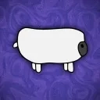

Fawas Interactive is a game development company driven by big ambitions and a passion for creating fun, unique experiences. We believe in giving players the freedom to enjoy and shape their experience however they want, and I’m committed to supporting things like user-generated content and optimization in any way I reasonably can.
Beginning in 2017 (under the former name: FawaStudios), a large amount of nearly lost-to-time projects were created, some bad, and some basically unplayable. But every misstep taught me something, helped me improve, and kept me committed to making things people can actually enjoy.
All these years later, Fawas Interactive is still here and still rapidly improving, much faster than before. It'd be great if you could join us on Discord, check out our latest games, and / or become part of the community, each person that benefits from Fawas Interactive is another massive reason to keep going!
Join Our Community My name's Ethan, and I'm the man responsible for Fawas Interactive. I'm a game enthusiast, albeit picky, with a love of all things game development and the ambitious desire to make positive change in the industry.
I'm very passionate about what I do, and Fawas gives me an outlet to share my love for things like Halloween, FPS games, the Source engine, camping, and spooky stuff. Nothing makes me happier than the idea that I can contribute to these interests by creating games that combine or replicate them in a way other people can enjoy.
Outside of holding Fawas Interactive in higher regard than my own life, I really love social hangouts, crime dramas (recently Dexter and The Punisher), eating food, and listening to music (primarily rock).
Our beautiful sheep mascot, Fawas, short for "Fleece As White As Snow," is one of our most valuable assets. He's based off of a real stuffed sheep I still have, that will be framed on my office wall once I succeed in becoming rich and famous.
Clown Clear is currently our most heavily developed project and has been steadily moving forward for a few years now. It contains zombie clowns, violence, pink clown goo, guts, guns, everything you'd want.
“Box Game”, it featured a player controller, a weird bean-stalk, and a big brick box accessible after simple parkour. If you were lucky enough to make it through the 5 janky jumps using the movement system that I may or may not have stolen from a youtube tutorial, you'd hop in and find a sphere. That was probably really funny to me back then.
A game engine like Unity or Unreal with minimal bloat built on the Source 2 engine (Source games are my favorite). The project is planned to have a platform mode similar to Roblox, but also a standalone exporter where they don't take any royalties, it's the successor to Garry's Mod, a game built entirely around modding and community. It's currently in a developer preview, but it's still my choice of game engine for most if not all 3D games from this point on, as it's leagues better than anything I've used before.
Makers of Project Zomboid, a deeply immersive and moddable zombie survival game that’s all about realism and sandbox freedom. It takes everything I love about sandbox games and amplifies it by 200%, you can move almost any furniture or item, and place it anywhere you want, with the only limitation being your imagination and the fact computers have performance requirements. Not only that, you can drive your car into a grocery store if the door’s big enough. Their dedication to player freedom, and spending years to iron out the kinks on a project they care deeply for, is unlike any other I've seen on the scale they've managed to make for themselves.
One of the best shows I've ever seen, Over The Garden Wall falls perfectly in line with what my definition of a masterpiece is. The writing is great, the characters are great, the voice acting is great, the music is great, the art is great, it'd be a hard sell to get me to find something in the show I can't point out as great. On a more objective note though, the team who created it clearly had a lot of passion for it, and took a lot of care to make sure it was impossible to screw up. Nothing gives me the same feeling I get when I rewatch it, or see clips of it, and the atmosphere they built never leaves me when I'm designing my games.